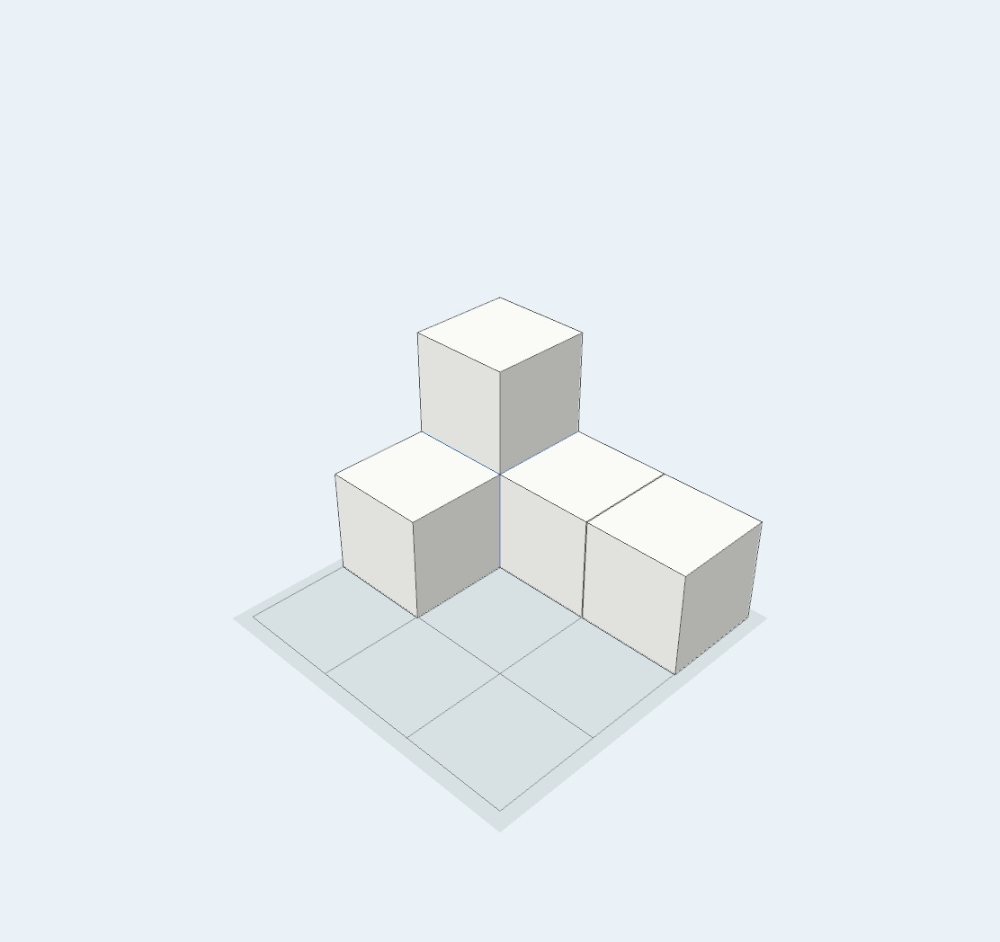
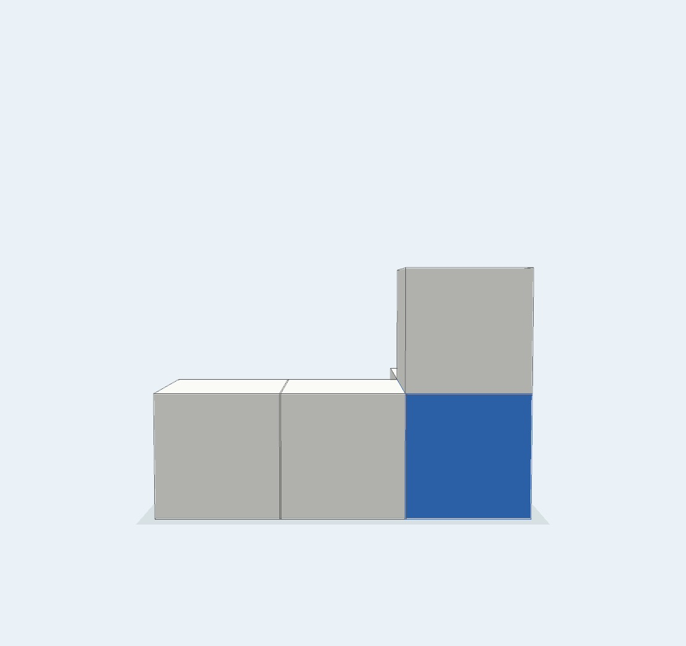
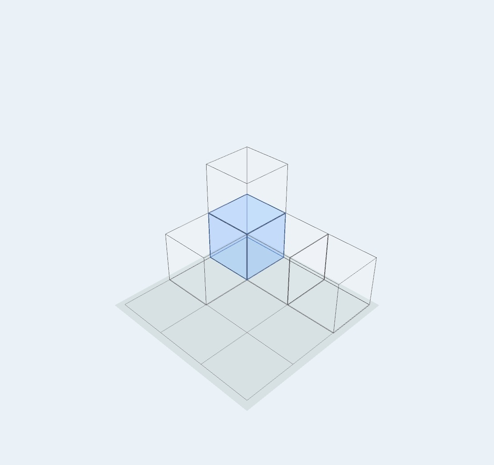
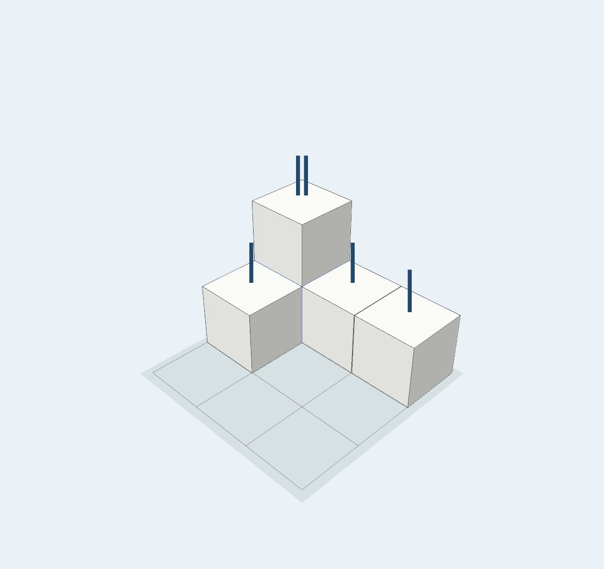
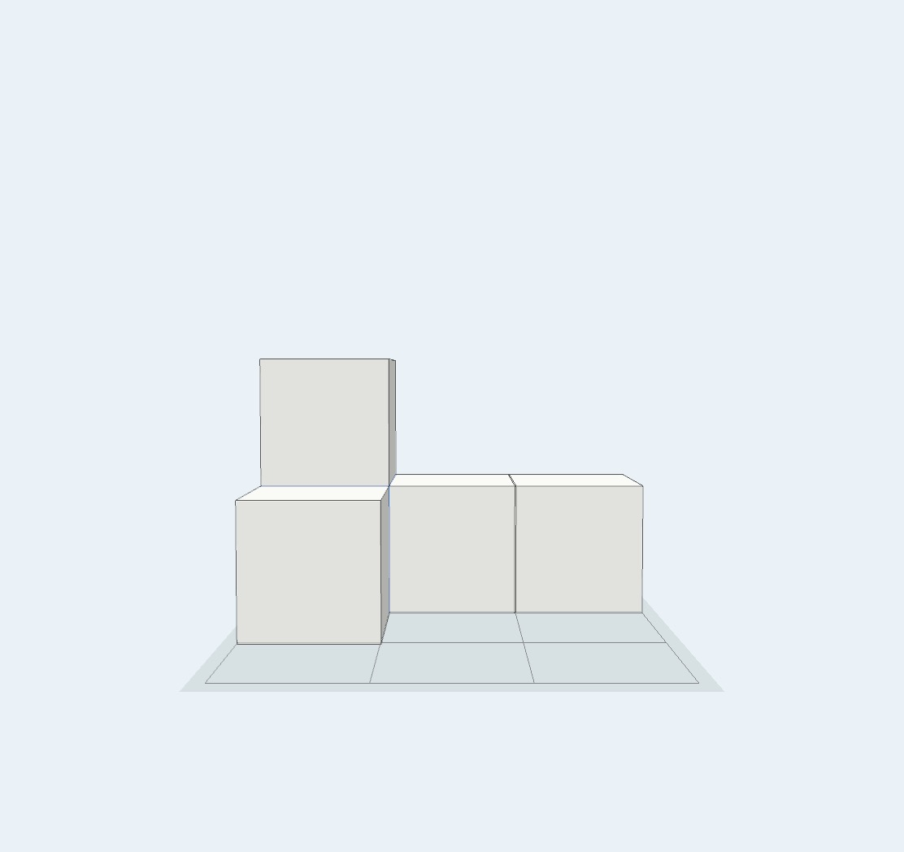
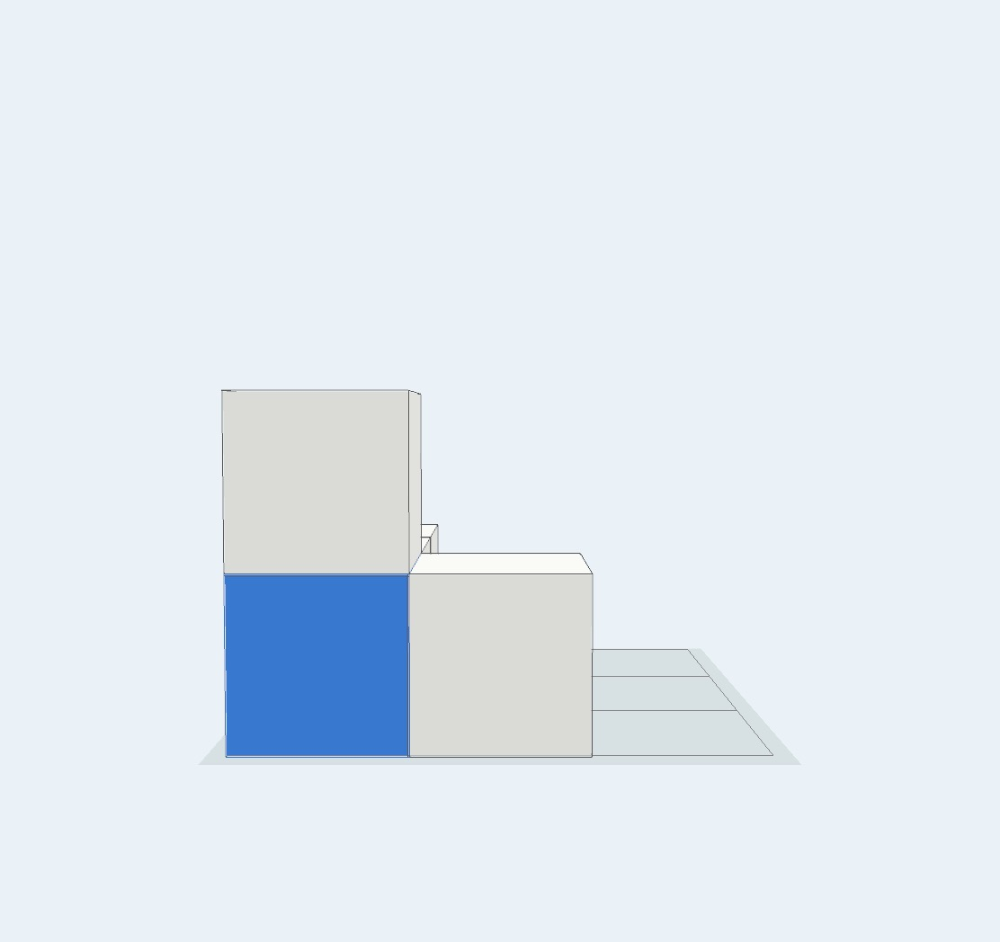
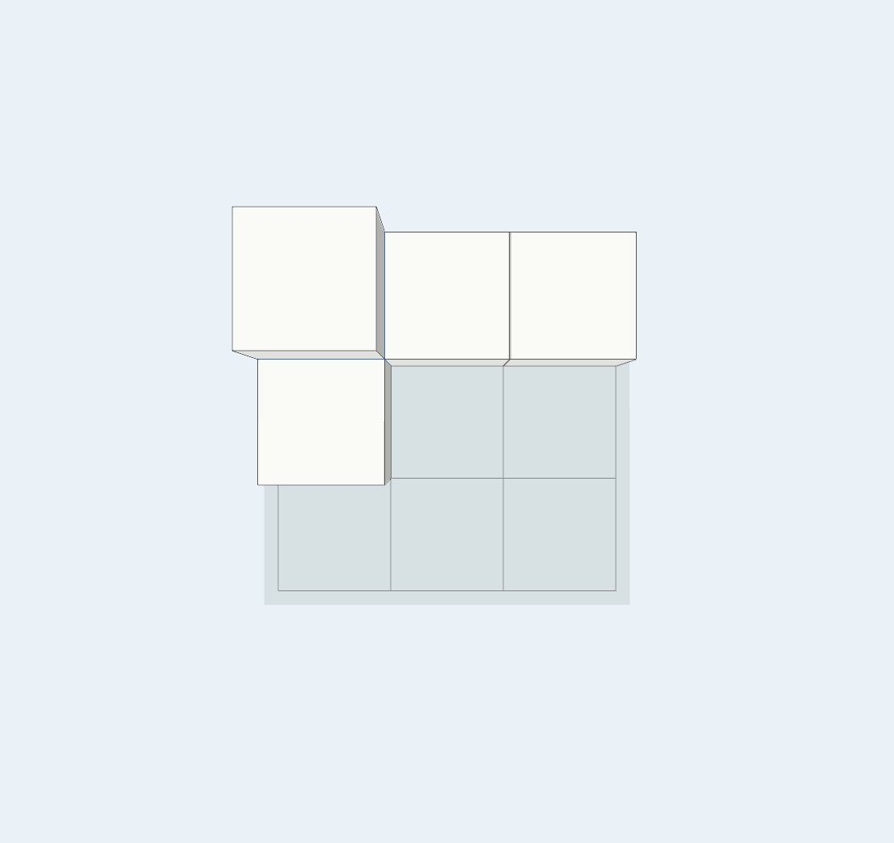
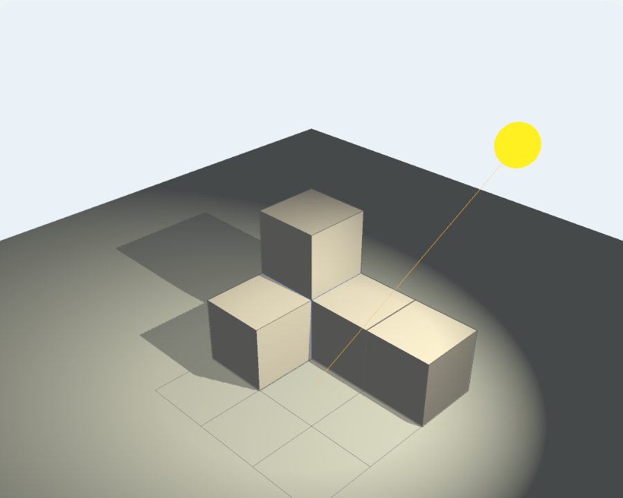
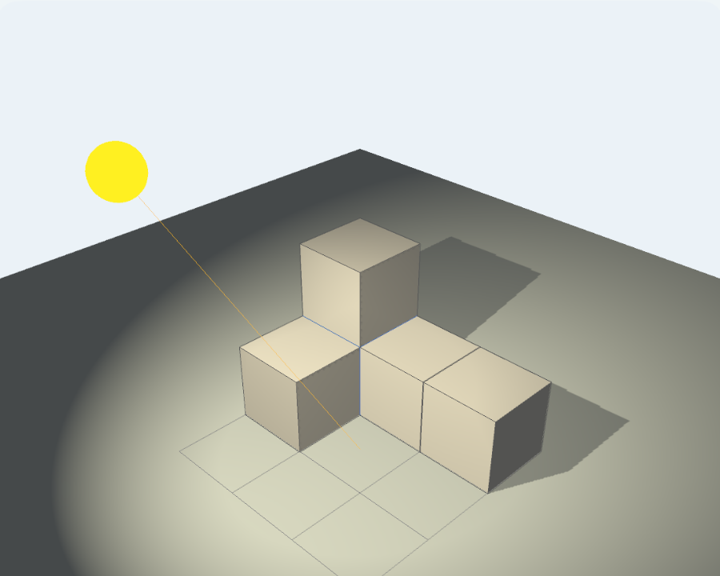

Combine hands-on play with a movable model
Physical blocks let learners feel how pieces stack and change their own position to look from another side. Drawings ask them to imagine the parts they cannot see.
MieTsumi complements those experiences. Its blocks do not shift or fall, the model can rotate freely, fixed viewpoints are always available, and See-through or Wire can reveal hidden structure.
It is an open-ended tool, not a lesson, answer generator, or scoring app.
Discover a hidden block
The model below contains five blocks, but only four are visible from the first angle. A blue block is hidden beneath the upper white block.
- Look at the first image and decide whether any blocks may be hidden.
- Build the same model in MieTsumi.
- Switch to Back and locate the blue block.
- Return to Angle and use Wire to inspect the same position.



Color can act as a marker: paint a block to follow it between viewpoints or to make an explanation easier to see.
Count by vertical stacks
Once the hidden structure is understood, count the blocks in each vertical stack. The Antenna turns each stack height into the same number of short lines.
In this example, one stack has two lines and three stacks have one line each. Together, 2 + 1 + 1 + 1 gives a total of five blocks.

The Antenna lines are not blocks. Their number represents the height of each vertical stack.
Compare viewpoints and color
The same model creates a different outline from the front, side, and top. Rotate freely to explore, then use a viewpoint preset to make a consistent comparison.
A colored block may also disappear behind or beneath another block. In this example, the blue block comes into view from the left.



Compare light and shadow
The Full Version’s Light mode lets you move a light source around the same model and compare the resulting shadows. A shadow generally extends away from the light source.


A suggested activity sequence
- Think about a drawing or build with physical blocks first.
- Decide on an answer or prediction.
- Build the same model in MieTsumi.
- Use rotation, viewpoints, color, See-through, Wire, or the Antenna as needed.
- Explain what changed and why.
The goal is to use the movable model to check an idea, not to skip the thinking that comes before it.